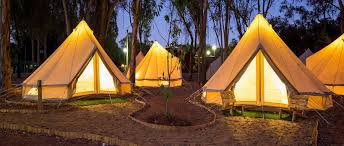
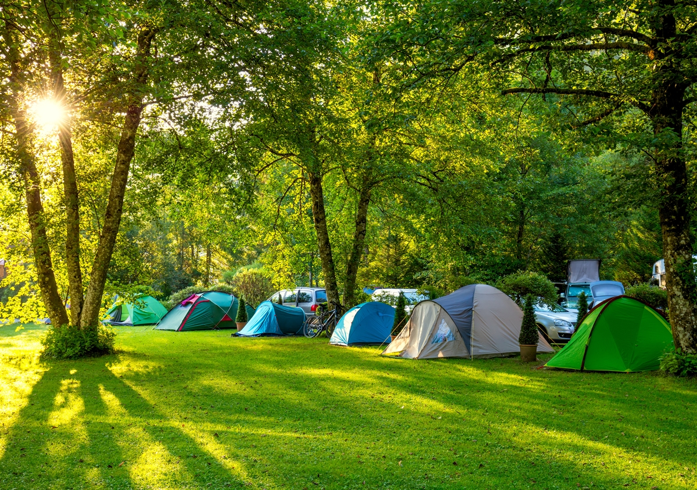
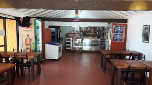
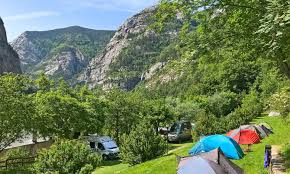

El Camping Los Pinares está ubicado en Barcelona. Este camping ofrece una variedad de servicios y comodidades para sus visitantes.
El camping cuenta con instalaciones que incluyen electricidad, agua potable, sanitarios, parrillas y un solárium con pileta.
Ofrece espacios para acampar con carpas o vehículos recreativos, así como opciones de bungalows o cabañas para quienes prefieren mayor comodidad.
Dispone de una tienda o proveeduría donde los campistas pueden adquirir productos básicos y alimentos.
Situado alrededor de la montaña, el camping ofrece fácil acceso a todo el mundo, permitiendo a los visitantes disfrutar del entorno rural y participar en actividades montañescas.
Para obtener más información o realizar reservas, se recomienda contactar directamente al camping a través de los números proporcionados.
+34 666555444 o +34 936665544
| Empresa | Camping Los Pinares |
|---|---|
| Audiencia | Personas adultas de 30 años o más |
| Mensaje | Queremos transmitir tranquilidad y relax |
| Plataformas | Usuarios de Tik Tok y Facebook |
| Duración | Cada vídeo dura entre 50 segundos y minuto y medio |
| Diseño | Imágenes pasando generados por IA y explicando |
| IA | Fliki |
| Guión | Para crear nuestros vídeos en Fliki, ingresamos a la plataforma y seleccionamos "Crear nuevo proyecto". Agregamos el texto que queríamos convertir en voz y elegimos una locución de inteligencia artificial con el tono adecuado. Luego, añadimos imágenes y clips de la biblioteca de Fliki o nuestros, organizándolos en la línea de tiempo. Personalizamos subtítulos, efectos y música de fondo para mejorar el resultado. Finalmente, lo exportamos en la calidad deseada y lo compartimos. Fliki hizo que todo el proceso fuera rápido y sencillo. |